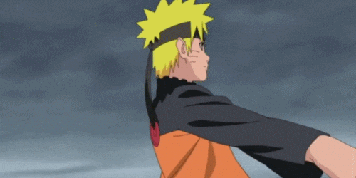
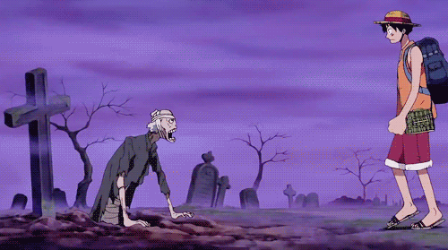

With thousands of titles to choose from, everyone's list for their top 5 anime of all time can look vastly different. After watching anime for just over 5 years now, this top 5 list is a culmination of nearly 5,000 episodes watched, distributed among shows both old and new. This may be subject to change in the future with new shows coming out each season, but for now here is my top 5.
5. Fullmetal Alchemist: Brotherhood

A story of two brothers, Edward and Alphonse Elric, who commit the ultimate alchemic taboo in an attempt to bring their mother back to life. After suffering a tragic loss, they set out on a journey to find the Philosopher's Stone to restore their bodies. With deep themes of sacrifice, morality, and redemption, Fullmetal Alchemist: Brotherhood is one of the most beloved anime of all time.
Fullmetal Alchemist: Brotherhood is the newest addition to my top 5 list, and I finished it just a couple weeks ago. It is not as long as some other entries like One Piece or Naruto, but Hiromu Arakawa's world of Amestris still touches my heart just as equally. The power system and setting of this world is very unique, being a steampunk-esque nation based in the early 20th-century with individual's powers being based on alchemy and the Philosopher's Stone. This style and source of fighting and power reminded me of Avatar: The Last Airbender and being a fan of that show, I think that elemental fighting is so cool. The characters also have a lot of depth to them and grow both physically and emotionally as the show goes on, showing off great character development.
Average MyAnimeList Score: 9.10
Genre: Action, Adventure, Drama, Fantasy
Click here to learn more about Fullmetal Alchemist: Brotherhood on MyAnimeList
4. Naruto
One of the "Big Three" shōnen anime (Naruto, One Piece, Bleach), this show Naruto Uzumaki, a young ninja shunned by his village due to the Nine-Tails Fox sealed inside him. To earn the village's respect and achieve his dream of becoming Hokage, Naruto sets out on an adventure full of intense fights, powerful friendships, and unforgettable moments.
Naruto was one of the first anime I ever completed, and watching all 720 episodes between Naruto and Naruto: Shippuden were well worth it, despite the great deal of filler that the series is known for. What strikes me the most is the journey from "zero to hero" that Naruto goes through. He goes from being bullied as a kid essentially being an orphan with unrealistic dreams, to training hard under mentors like Kakashi and Jiraya and building up his chakra abilities, to eventually becoming the Hokage of the Leaf Village. This journey is full of lots of up and downs and intense relationships/friendships that made me cry more than a few times. The story has a few plot holes that I only really realized upon finishing the show, but the nostalgia factor for me overrides a lof ot those holes.
Average MyAnimeList Score: 8.00
Genre: Action, Adventure, Fantasy
Click here to learn more about Naruto on MyAnimeList
3. One Piece
Eiichiro Oda’s legendary series follows Monkey D. Luffy and the Straw Hat Pirates as they sail through the Grand Line to search for the One Piece — an ultimate treasure left by the King of the Pirates, Gol D. Roger. With its rich world-building, deep lore and power-scaling system, and incredible character development, One Piece is a masterpiece that has entertained fans for decades.
While One Piece is not my number 1 anime at the moment, I do believe that it could easily become my favorite by the series' end. Of course, who knows when that will be with the series on 1122 episodes and growing each week. As I mentioned before, the world-building in One Piece is in my opinion the best in all anime. Since the series is so long, Oda has been able to weave lore and new characters into the dozens of new islands the Straw Hats encounter, meaning new opportunities for crazy villains with new powers (see here for an explanation of devil fruits, the main power source in One Piece). This world-building plus the countless emotional and hilarious moments has made me fall in love with the world of One Piece, despite the initial hesitation to start it due to the massive amount of episodes.
Average MyAnimeList Score: 8.73
Genre: Action, Adventure, Fantasy
Click here to learn more about One Piece on MyAnimeList
2. Vinland Saga

Set in the Viking era, Vinland Saga tells the story of Thorfinn, a young warrior looking for revenge against Askeladd, a mercenary who killed his father Thors. As Thorfinn heads through Europe, he learns the reality of violence and war, and on the contrary, what it means to have peace. This anime delivers a historic narrative combined with stunning animation and historical depth.
For starters, I am of Swedish descent and never before have I seen an anime that depicts the world of Scandinavia and Vikings better than Vinland Saga. Some history channel shows pale in comparison to this masterpiece. The world-building is so realistic, going through early 11th-century Europe in countries like England and Denmark, and as a fan of history in general and the history of the Vikings it is incredible to see how well animated these locations and scenes are. The fighting also feels extremely realistic, depicting knife, axe and sword combat just like there would have been in a historic setting. On top of all this, the famous message "You have no enemies" stated by Thors (Thorfinn's father) resonates so deeply with me and many other fans, something I try to remind myself every day to live a more peaceful and positive life.
Average MyAnimeList Score: 8.76
Genre: Action, Adventure, Drama
Click here to learn more about Vinland Saga on MyAnimeList
1. Attack on Titan (AOT)

An outstanding story of survival and war, Attack on Titan follows Eren Yeager and his friends as they fight against giant humanoid creatures known as Titans that threaten to destroy humanity. As the truth behind the Titans and the world they live in is uncovered, the series takes a dark turn filled with political intrigue, emotional depth, and unforgettable action sequences.
Similarly to One Piece, Majime Isayama does a phenomenal job at world-building, something tough to achieve with a world primarily set on a singular island. Through a great deal of foreshadowing and lore-building, we learn more about the history of the titans and how the world came to be. For a mangaka who began his magnum opus at the age of 19, the writing is ridiculously thought out and was clearly planned out years before major reveals in Season 2 and Season 3 Part 2. This remarkable storytelling is what drew me in, and I have yet to find another anime with such depth of lore-building. It is also such a unique setting that feels as if it could be in the real world, but with weapons such as the omni-directional mobility gear it is very unrealistic, and the blend of the two is done spectacularly.
Average MyAnimeList Score: 8.55
Genre: Action, Award Winning, Drama, Suspense
Click here to learn more about Attack on Titan on MyAnimeList